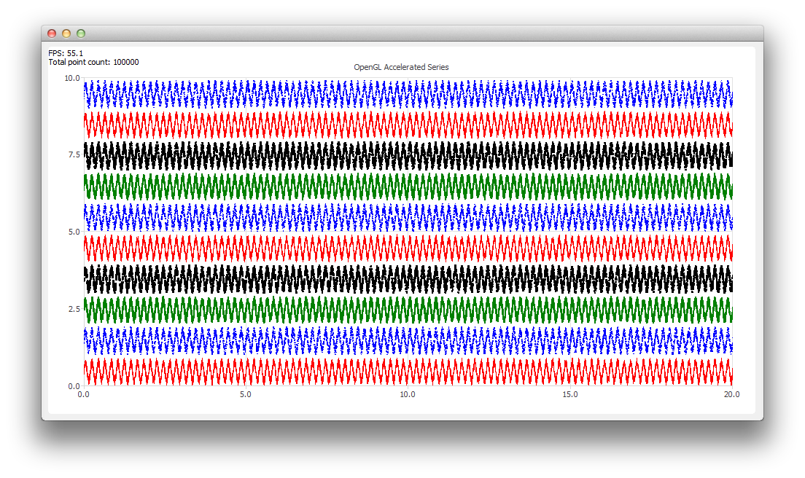

OpenGL Accelerated Series Example
The example shows how to enable OpenGL acceleration for QLineSeries and QScatterSeries.

Running the Example
To run the example from Qt Creator, open the Welcome mode and select the example from Examples. For more information, visit Building and Running an Example.
Enabling OpenGL Acceleration
To create an OpenGL accelerated series, all you have to do compared to a regular series is to set QAbstractSeries::useOpenGL property to true:
series->setUseOpenGL(true);
This makes the chart to instantiate a transparent QOpenGLWidget that is used to draw the accelerated series on top of the chart.
Note: The OpenGL acceleration is only supported for QLineSeries and QScatterSeries.